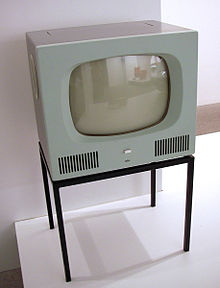

television
historia de la television<2>
En el año 1922 el inventor escoces johnlogiebaird realizo laprimera experiencia real detransmision, usando dos discos
que estaban unidos en el mismo eje uno receptor y otro emisor
el 26 de enero de 1926 se realizo en el laboratorio del numero 22 la primera demostracion de un sistema de television ante un grupo de cientificos
en 1926 se logro por medio de un cable telefonico transmitir una señal de television entre glasgow y londres, fundando la compañia de teles "baird television development company"
sus televisiones podian transmitir 12.5 imagenes por segundo.
El 3 de julio de 1928 se hizo la primera transmision a color usando discos de escaneo en los extremos de la transmisión y recepción con tres espirales de aperturas
En 1927 se logro transmitir señales a 705 km por una linea telefonica entre londres y glasgow, esa transmision fue en respuesta a alguien a 330km
en 1928 logro transmitir imagenes desde londres a nueva york por medio de señales de radio
british broadcasting corporation (bbc) adopto su sistema de lineas de barrido y hacia 1930 lo comercializo, creando el modelo de tv plessey.
las primeras emisiones publicas de television las efectuo la bbc en inglaterra en 1927, la primera emisora fue creada ese año por manfred von ardenne.
En 1937 comenzaron las transmisiones regulares de TV electrónica en Francia y en el Reino Unido. Esto llevó a un rápido desarrollo de la industria televisiva
y a un rápido aumento de telespectadores, aunque los televisores eran de pantalla pequeña y muy caros. Estas emisiones fueron posibles por el desarrollo del tubo de rayos catódicos y el iconoscopio
Ya en 1928 se desarrollaron experimentos de la transmisión de imágenes en color en los cuales también tomo parte el ingeniero escocés John Logie Baird. En 1940, el ingeniero mexicano del
Instituto Politécnico Nacional Guillermo González Camarena desarrolló y patentó, tanto en México como en Estados Unidos un sistema de tele a color
El primer sistema de televisión en color que respetaba la doble compatibilidad con la televisión monocroma fue desarrollado en 1951 por la empresa estadounidense Hazeltine Corporation, bajo la supervisión de Arthur Loughren,
vicepresidente de la empresa y Charles Hirsch, Ingeniero Jefe de la División de Investigación.
Es a finales del siglo XX cuando la televisión se convierte en una verdadera bandera tecnológica de los países y cada uno de ellos va desarrollando sus sistemas de TV nacionales y privados.
En 1953 se crea Eurovisión que asocia a muchos países de Europa conectando sus sistemas de TV mediante enlaces de microondas. Unos años más tarde, en 1960, se crea Mundovisión que comienza a realizar enlaces
con satélites geoestacionarios cubriendo todo el mundo.

"modelo de tele braun hf 1"
TELEGRAFO
historia del telegrafo